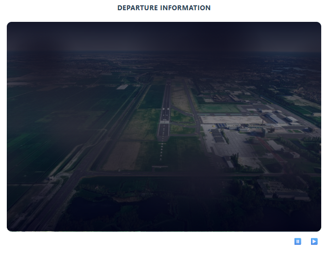

Warning
Information should be carefully checked on its correctness and manually changed when needed.
The tabs Departure, and Arrival have similar tabs but the information will differ based on the aerodrome information, weather conditions and user specified information. There various expanders that group information of a catagory.
{kind=link}
The main top figure shows the photo of the departure/arrival aerodrome. The real-time METAR weather conditions can be animated with the buttons: ⏸️ ▶️.
 |
The top ones are automatically filled with either static, or real-time information. All information is combined into visual plots and graphs that are shown in the last expanders.
Note
User defined changes for the aerodromes are stored in your personal environment and loaded the next time for this aerodrome.
METAR
METAR (Meteorological Aerodrome Report) is a standardized format for reporting current weather observations. It is used in aviation to provide critical information about the weather conditions at airports and in the vicinity.
In SkyWalk, the data is derived from National Oceanic and Atmospheric Administration (NOAA) which provides information for thousands of weather stations. Some weather station return information every 30 minutes while others on a daily basis, and some do not return any information. Reasoning is malfunctioning or any other kind. In SkyWalk, every minute is checked whether data can be refreshed.
Real-time weather information helps pilots to make informed decisions about takeoff, landing, and in-flight operations. In SkyWalk, METAR information is processed with focus on:
Safety
Flight Planning
Operational Efficiency
The following information from the METAR stations is processed in various parts of SkyWalk:
Wind Direction
Wind Strength
Wind Variation
Wind Gust
Temperature
Dewpoint
Visibility
Weather: rain/snow/etc information
Note
METAR stations are removed that did not return any information in the last 4 hours. However, stations can be checked on activity and included again by a simple press on the button in the Settings tab.
{kind=link}
Variable (VRB) winds
When a VRB or variable wind is returned on the METAR, such as: VRB02KT, it means that no wind angle can be used in the computations.
In SkyWalk, a message will be shown that the wind is VRB. Note that when a different weather station is selected and the VRB is ignored, the wind remains VRB on the location.
Warning
Variable (VRB) does not allow to make computations. You can update this manually.
AERODROME
The Aerodrome expander presents information about the aerodrome itself.
The cloud plot is a visualization that depicts the METAR information, such as cloud ceiling, scatter, overcast etc, together with the aerodrome levels, circuit and departure. It will visualy demonstrate the height of cloud, and whether there is a cloud-base formation within the circuit and departure/arrival altitude. Animation (start/stop) of the clouds will start by clicking on the image. The direction of cloud movement depends on the wind direction.
{kind=link}
CONTACT
The CONTACT expander shows information about the frequencies.
These frequencies are also used in the ATC Transcripts.
{kind=link}
FIC
The FIC expander shows information about the enroute frequencies.
These frequencies are also used in the ATC Transcripts.
{kind=link}
WIND ENVELOPE
Understanding the impact of crosswind and headwind is crucial for safe flight operations:
Headwind: A wind blowing directly against the direction of travel. Headwinds increase the relative airspeed, providing better lift during takeoff and landing but can increase fuel consumption and flight time when cruising.
Crosswind: A wind blowing perpendicular to the direction of travel. Crosswinds can make takeoff and landing challenging due to the lateral force exerted on the aircraft, requiring pilots to use techniques such as crabbing or side-slipping.
The components of wind relative to the runway can be computed using trigonometric formulas. Given a runway aligned at angle θ_r and wind coming from angle θ_w with speed V_w:
Headwind Component:
\[V_{headwind} = V_w \cos(\theta_w - \theta_r)\]Crosswind Component:
\[V_{crosswind} = V_w \sin(\theta_w - \theta_r)\]
These formulas help in determining the effective headwind and crosswind components based on the wind’s angle and speed relative to the runway’s orientation.
Example Calculations
For demonstration purposes, let’s make a some computations. In the first example, the METAR reports a wind angle/strength of 24025, and we will depart from runway 24. The headwind and crosswind components can be calculated as follows:
Runway angle, θr = 240°
Wind direction, θw = 240°
Wind speed, Vw = 25 knots
\[V_{headwind} = 25 \cos(240° - 240°) = 25 \cos(0°) = 25 \times 1 = 25 \text{ knots}\]\[V_{crosswind} = 25 \sin(240° - 240°) = 25 \sin(0°) = 25 \times 0 = 0 \text{ knots}\]
If the wind direction changes to, for instance, 260°, the components would be:
Runway angle, θr = 240°
Wind direction, θw = 260°
Wind speed, Vw = 25 knots
\[V_{headwind} = 25 \cos(260° - 240°) = 25 \cos(20°) \approx 25 \times 0.94 \approx 23.5 \text{ knots}\]\[V_{crosswind} = 25 \sin(260° - 240°) = 25 \sin(20°) \approx 25 \times 0.34 \approx 8.5 \text{ knots}\]
Wind Envelope plot
The wind envelope is a graphical representation to illustrate how wind strength can vary during departure and arrival. In the previous example were shown two examples of how the headwind and crosswind component changes based on the wind angle. In the wind envelope, all possible scenarios from 0-360 degrees are shown including the wind gust if shown by the METAR.
The wind envelope thus shows whether the crosswind and headwind remain within acceptable limits. Also in case of wind gusts. These limits can be based on personal preferences, aircraft specifications, or guidelines provided by an air club. The default limits are set to 25 knots for headwind and 15 knots for crosswind.
{kind=link}
All possible wind conditions are represented in the wind envelope:
The blue line represents the wind limits for the given crosswind and headwind, including all intermediate points.
The red cross (X) shows the actual crosswind and headwind for the given METAR.
The red line depicts the wind strength across all possible angles (0-360 degrees), accounting for potential changes in wind direction.
The orange line illustrates the impact of wind gusts for the given angle.
Interpretation of the wind envelope:
If the red cross (X) is outside the blue line, the wind strength exceeds the maximum wind limits.
If any part of the red line extends beyond the blue line, it indicates that certain wind angles can push the aircraft outside the maximum crosswind/headwind limits.
If the orange line is outside or moves outside the blue line, it indicates that wind gusts on the METAR can push the aircraft beyond the maximum crosswind/headwind limits.
WEIGHT AND BALANCE
In the weight and balance section you can update the weights of the persons on board together with the fuel amount. Weight and balance computations ensure that an aircraft is loaded within safe operational limits before flight. This involves calculating the total weight of the aircraft—including passengers, baggage, and fuel—and determining how that weight is distributed relative to the aircraft’s center of gravity. If the center of gravity is too far forward or aft, it can negatively affect stability, control, and performance. By verifying that both the total weight and the balance fall within the approved envelope, pilots ensure the aircraft can take off, fly, and land safely under the given conditions.
All information will be processed and it is determiend whether the weight distribution affects the performance of the aircraft.
{kind=link}
{kind=link}
RUNWAY
A correct estimation of the required runway length is a fundamental factor ensuring the safety and efficiency of aircraft operations. To compute the required runway length for takeoff and landing, various factors are needed, including weather conditions, aircraft performance characteristics, but also the guidelines provided in the Pilot’s Operating Handbook (POH).
Runway length computations start thus with the aircraft’s baseline performance from the POH (Pilot Operating Handbook). This baseline distance depends mainly on altitude, temperature, and aircraft weight, and is estimated using a fitted model. From there, the required distance is adjusted step by step to reflect real-world conditions. Wind is applied first—headwind reduces the required distance, while tailwind increases it. Next, runway surface and condition (e.g. dry asphalt vs wet grass) are taken into account, followed by runway slope, where an uphill slope increases the distance and a downhill slope may reduce it.
Finally, a safety margin is applied to ensure conservative and safe operations. This results in a final required runway distance, which is then compared against the actual available runway length (also adjusted with a safety factor). In summary, the main factors affecting runway length are: aircraft performance (POH), environmental conditions (altitude and temperature), wind (headwind/tailwind), runway characteristics (surface and slope), and operational safety margins.
Factors Affecting Runway Length:
Weight: Heavier aircraft require more runway distance due to increased inertia and higher lift-off or landing speeds.
Temperature: Higher temperatures reduce air density, decreasing engine and aerodynamic performance and increasing required distance.
Wind: Headwinds reduce runway distance, while tailwinds significantly increase the required distance.
Airfield Elevation: Higher elevations reduce air density, leading to longer takeoff and landing distances.
Runway Surface: Soft, wet, or contaminated surfaces increase rolling resistance and required distance.
Runway Slope: Uphill slopes increase required distance, while downhill slopes may reduce it.
Runway Condition: Standing water, snow, or ice reduces braking effectiveness and increases landing distance.
Runway Length Available: Declared distances (TORA, TODA, LDA) limit usable runway for operations.
Safety Margins: Regulatory and operational safety factors increase the calculated required distance.
{kind=link}
Note
Information from the POH can be saved in SkyWalk for accurate runway length computations tailored to the specific aircraft.
Required Data
There are multiple data sources required to determine the required runway length. The data can be incomplete, missing or incorrect. Make sure to update the information accordingly. Data pre-processing is readily performed to determine the surfaces and generic catagories. This information is important to accuratenly determine the runway takeoff and landing distances.
For each aerdrome, information is loaded from a static data source and includes information such as runway angle, surface type, runway lenght, slope.
METAR data is used for temperature, wind and altitude corrections.
The following runway types are available:
Surface: Hard, Soft, Other
Condition: Dry, Wet
Takeoff/ Landing Computations
The runway length computations are shown in the tab RUNWAY. Each correctionfactor that is applied is
and easy to follow which factor has the most effect on the takeoff and/or landing distance.
{kind=link}